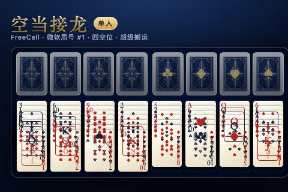

一、目标与胜负
空当接龙（FreeCell）使用一副 52 张标准扑克，没有暗牌，也没有抽牌堆。玩家要利用四个自由空位和八列牌桌，把每一门花色的牌从 A 到 K 依次送进对应的基础堆。四个基础堆都收满 13 张（合计 52 张）时，本局胜利。
本作是单人游戏（页面与规则页均标注「单人」），不设联机房间。每局同时记录步数与用时，成绩保存在本机。
二、牌桌构成
| 区域 | 数量 | 规则 |
|---|---|---|
| 牌桌列 | 8 列 | 发牌后第 1–4 列各 7 张，第 5–8 列各 6 张；全部明牌。 |
| 自由空位 | 4 格 | 每格最多放一张牌，可随时取回。 |
| 基础堆 | 4 堆 | 每门花色一堆，只能按 A、2、3……K 升序收牌。 |
| 整副牌 | 52 张 | 任何时刻都必须恰好存在一次，不允许增删。 |
三、发牌与微软局号
局号（deal number）取 1 到 1000000 的整数。输入局号后，页面使用微软 FreeCell 的发牌算法生成牌局，因此在任何设备上同一个局号都会得到完全相同的 52 张牌。
state = (state × 214013 + 2531011) mod 2147483648
rand = floor(state / 65536) mod 32768
牌面编号 0–51：点数 = 编号 mod 13（A 到 K），花色 = floor(编号 / 13)，花色顺序为梅花、方块、红桃、黑桃。依次取 j = rand() mod (52 − i) 从剩余牌中抽取，再按行发到 8 列：第 1 轮发每列第一张，第 2 轮发每列第二张，依此类推。局号 1 的第一张牌固定是黑桃 3。
随机局按钮使用浏览器加密随机源（共享 shuffle 模块的 createRng()）抽取局号，不使用 Math.random；同一局号的复现与分享依靠局号本身。
四、合法移动
- 牌桌叠放：只能把比目标牌小 1 点、且颜色相反的牌叠上去，例如红 6 可以压在黑 7 上；同色不能叠，点数不相邻不能叠。
- 空列：任何一张牌都可以放进完全空的列；整列也可以作为一组搬到另一个空列（见超级搬运）。
- 整串移动：牌桌中的一段连续牌，只要从起点到列底每一对都满足降序且红黑交替，就可以作为一整串搬动。
- 自由空位：只能从一列的顶端取一张放进空位；空位里的牌可以放回牌桌，也可以直接送上对应基础堆。
- 基础堆：只能收同一门花色、点数正好比当前顶牌大 1 的牌；空基础堆只接受 A。基础堆顶牌可以移回牌桌或空的自由位。
- 不能做的：不能把牌放到同一列的同一位置；不能越过上面的牌抽取下面的牌；不能把 K 以外的牌送上空基础堆。
五、超级搬运公式
空当接龙允许一次搬动多张连续牌，上限由空位与空列共同决定：
- 搬到非空列时，所有空列都可以作为中转，空列数量按全场统计。
- 搬到空列时，目标空列本身不能同时当中转，因此空列数量要减 1。
- 整列搬运例外：如果搬的是某一列的全部牌，搬到空列时不受上述上限限制。
- 单张牌永远可以移动；空位与基础堆的移动不受串长限制。
举例：开局 4 个空位、没有空列，最多可搬 (4+1)×2⁰ = 5 张；如果已经腾出 2 个空列，则最多可搬 5×2² = 20 张。
六、自动安全收牌
「自动收牌」只送走确定安全的牌：A 总是安全；其他牌只有在两门异色基础堆都已经达到「该牌点数 − 1」时才自动送上。例如黑 5 只有在红桃与方块两门基础堆都至少收到 4 时才会自动归位，避免把仍要承接小牌的牌提前收走。
每次手动移动后，页面也会执行一次安全收牌，并把因此产生的步数一起计入本局。若要回退，撤销会恢复到移动前的完整局面。
七、提示、撤销与键盘
- 提示 H：优先建议能上基础堆、能翻开被压牌、能腾空列的走法，并在牌桌上高亮来源与目标。
- 撤销 U：回退上一步（包括该步触发的自动收牌），最多保留 200 步历史。
- 新局 N：随机抽取新的微软局号；R 也是随机局；A 自动收牌；T 切换主题；Esc 取消选择。
- 手机：点一张牌选中，再点目标位置；桌面也可以直接拖拽。双击一张牌会尝试自动寻位。
八、计分与记录
本作不设虚拟货币或排行榜，成绩以两项硬指标记录：步数与用时。手动移动与自动安全收牌都会增加步数；用时从第一次移动开始计算，胜利时停止。最少步数与最快用时保存在本机浏览器，刷新或离线重开仍可查看。
步数越少、用时越短越好。中断后开新局会结束当前连胜；胜利会增加胜局与连胜记录。
九、常见问题（FAQ）
- 超级搬运一次最多能搬几张？
- （空自由位 + 1）× 2^空列数。搬到空列时目标列不计入空列；整列搬运不受限制。
- 基础堆的牌可以拿回牌桌吗？
- 可以。微软版允许把基础堆顶牌移回牌桌或空的自由位，方便重新组织。
- 为什么同样局号每次牌局都一样？
- 局号使用微软线性同余发牌算法，1–1000000 的整数唯一决定 52 张牌的顺序。
- 自动收牌会送走不该送的牌吗？
- 不会。它只送 A 和异色两门基础堆已达到点数减一的牌，其余牌保留在桌面。
- 手机上怎么搬整串牌？
- 点整串最上面要移动的那张，再点目标空位、空列或目标牌；也可以使用提示。
- 怎样算一局完成？
- 四门花色基础堆都从 A 收到 K，共 52 张，立即判定胜利并显示步数与用时。
十、规则来源与延伸学习
- BV1yS4q6UEy3 — 空当接龙新手入门：临时空位怎么用，整串怎么搬
- BV1Sx411F7D6 — 【芯酱】空当接龙教程
- BV1XNYT6ZEnY — 2026年了，还有人想学空当接龙吗？
- 微软 FreeCell 发牌算法（deal number 1–1000000）与标准超级搬运规则。
